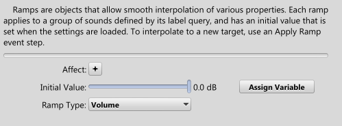

|
Ramps |
| Navigation |
Defines a ramp for use in the game. Ramps are means of smoothly interpolating aspects of a sound over time.

See also Ducking and Ramps
 Blends Blends |
 Settings Settings |
 Limits Limits |

|
Miles Sound System 9.3b
E-mail miles3@radgametools.com for technical support. Copyright © 1991-2012 by RAD Game Tools, Inc. All Rights Reserved. |

|